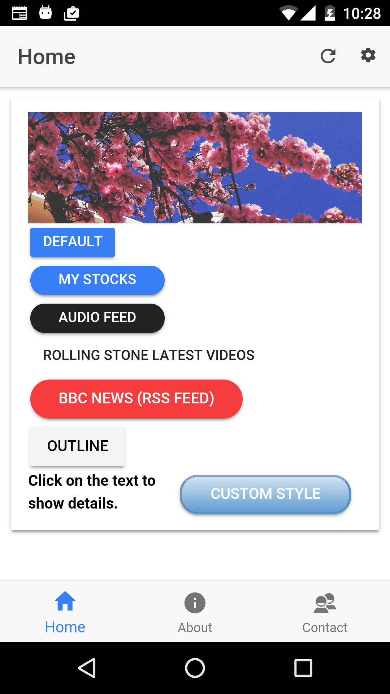
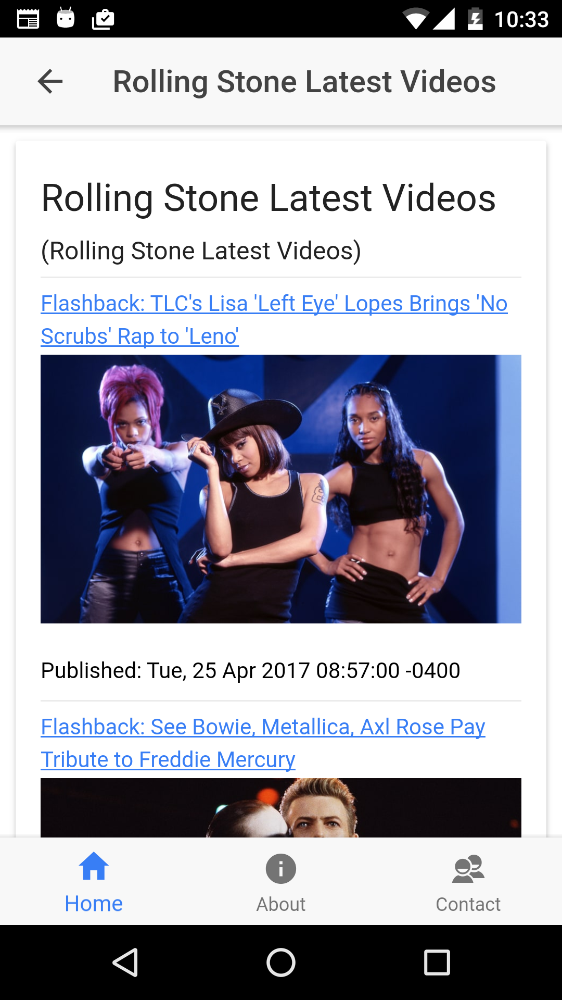
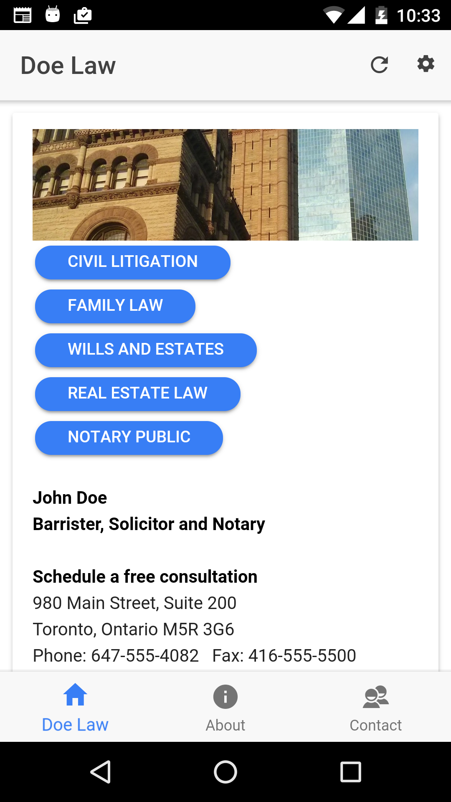
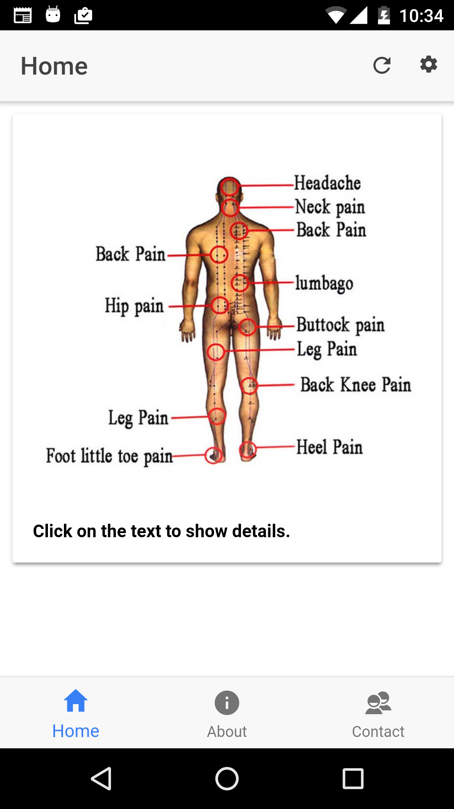

Monday, 17. April 2017 10:01PM By: Ivo Zivkov, izivkov@gmail.com
This is a simple hybrid mobile application allowing users to define its functionality by only manipulating its backing Google Spreadsheet. Instead of a traditional database for the back-end, it uses Google Sheets to store data, content, behaviour and styling information. The app can keep a list of Google Sheets and switch between them, in effect switching to a different app.
Some examples of applications which can be created are:
Here are some screenshots of sample applications which can be created:
   
A lot of the logic for the app can be implemented in the Google Sheets through sheet formulas, referring to oher sheets for the data, scripting, etc.
Since the app can itself refer to multiple Google Sheets which define apps, the naming could be confusing. We refer to the Google Sheet as "Sheet App", and the mobile app as just "App". Similarly, tabs in a Googe Sheet are referred as "Sheet Tab", and a tab in the mobile app as just "Tab".
There is always a balance between flexibility and ease of use. This app is geared toward simplicity, and therefore we have applied some constraints:
The process is as follows:
Use the link below to open our sample Google Sheet and save it to your Google Drive:
https://drive.google.com/open?id=1W0K8HC85gmHvp3fX6eJZCBTL4miTgsLI2ntqW4Sk7ZE File -> Make a copyThis will save a new Google Sheet with a name "My App" to your Google Drive, so you can modify it.
Publish your sheet and copy the published URL:
File -> Publish to the web...Copy the link and send it to your mobile device in an email.
Now, in the mobile app, go to settings, add a new Sheet App, and paste the URL to connect to your new Google Sheet. This, in effect, will add a new Sheet App to your mobile App.
Interactively make changes to your Google Sheet and refresh the app the see your changes.
Although we call this an "Universal App", it has some specific structure:
This is a tabbed app - it has one or more tabs, defined in the Google Spreadsheet.
The first tab is assumed to be a "Home Screen".
The Home screen has some buttons, which bring up "Detail Screens". It can also contain an image.
Detail screens can contain HTML text, Images and YouTube videos
Do not confuse Detail screens with Tabs. Tabs top-level screens. Detail screens are pop-ups over the home screen.
All this functionality is driven by the backing Google Spreadsheet. Here we describe what this spreadsheet contains:
The Google Sheet contains three Sheet Tabs: app-info, tabs and buttons:
Each Sheet Tab has some required columns. For example, the buttons Sheet Tab has the columns: name, text, image, video, style, shape, color and size.
As long as you keep this basic structure, what you put into the spreadsheet is up to you. You can add additionals sheet tabs, add scripting to your sheets, add/remove rows, change text, etc.
Let us go over each of the sheet tabs.
app-info - Contains general information about the app. It has the following columns:
name - the name of the application, which will appear when we add and display this sheet app in the settings.
author - the author of the sheet app. This will appear in the sheet app's information in the setting.
image - the image to be displayed on this sheet app in the list of sheet apps on the setting screen.
date - when the sheet app was created.
version - the version of the sheet app. Not currently used.
tabs - this sheet tab defines the tabs of the app (Home, About, Contact, etc). It contains the following columns:
name - the name of each tab in the mobile app: Home, About. etc. You can add or delete rows to define how many tabs your application will have.
title - The title of the tab, to be displayed on top-left of each tab.
style - currently not used
text - the HTML text we like to put in this tab.
image - image to be displayed in the tab
tabicon - the icon to be shown at the bottom of the screen, corresponding to the tab.
hidden - boolean (yes or no) value to indicate if we like to show or hide that tab. Default to 'no' (do not hide).
buttons - defines the buttons on the home tab, and the corresponding detail screens they bring up. It contains the following columns:
name - the name of a button.
text - this is the HTML text to be displayed in the new detail screen which the button will bring up. Note that the text column can contain HTML tags. Also note, that we have the full power of Google Sheets behind us, so the text does not need to be static. It can refer to other columns, and even to other sheet tabs or spreadsheets. You can also use Google API to get information from an outside source or use Google Scripts to provide information. For example, to display the current price of SPY index, you can put the formula:
="SPY price: " & GOOGLEFINANCE("SPY", "price") & " USD"and the values in your app will be updated with the current price.
image - image to be displayed in the Detail page
video - this is an URL of a YouTube video to be shown on the detail screen. To prevent CORS issues, get the YouTube URL from the embedded code. Right-click on the YouTube video and select "Embedded Code". Then paste in any editor, and select the URL part only. Should look something like this:
https://www.youtube.com/embed/nDirbacjYstyle - this field allows the user to apply CSS style to the button to control appearance and location. For example, if we like a hidden button at a specific location we can add a style like:
{
"position": "absolute",
"top": "15%",
"left": "60%",
"color":"transparent"
}shape - the shape of the button. You can select one of: clear, round, full, block and outline.
color - the color of the button. Options are: danger, default, secondary, light and dark.
size - size of the button. Options are: small, default and large.
This page allows the user to select the sheet app to use, add and delete. Each Google Spreadsheet defines a new sheet app.
When you select one of the sheets apps, the user is taken back to the homepage, with the new screen from the selected sheet app.
To add a new sheet app, copy the spreadsheet published link:
File -> Publish to web...Then in the mobile app, go to Settings and press the button. A pop-up will appear. Paste the selected link:
Once you paste the link into the dialog box, the sheet app's image and name will appear (defined in the app-info sheet tab of the spreadsheet):
Just press the ADD button on the dialog and the new sheet app will be added to the list of sheet apps.
To delete a sheet app, long-press on any of the sheets apps in the list, until check-boxes appear on the right. Select the sheet apps you like to delete, and press on the trash can button to delete them. You cannot delete the currently selected sheet app, since you need at least one sheet app to run the mobile app.
Note that you are only deleting references to the spreadsheet from the mobile app, not the actual scpreadsheets.
You can also reset the the settings to default by pressing the  button. This will remove all the added apps except the default one.
button. This will remove all the added apps except the default one.